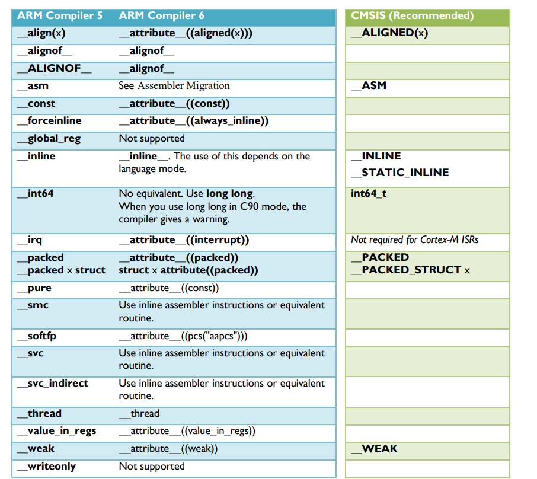

<!DOCTYPE lake>
<p data-lake-id="u1e0865c6" id="u1e0865c6"><span data-lake-id="u5e240eac" id="u5e240eac">关于MDK将AC5工程适配AC6的内容可以下载KEIL官方的文档</span><a data-lake-id="u9144c148" href="https://developer.arm.com/documentation/kan298/latest/" id="u9144c148" rel="noopener noreferrer" target="_blank"><span data-lake-id="udc6f307a" id="udc6f307a">https://developer.arm.com/documentation/kan298/latest/</span></a><span data-lake-id="uf723c9e3" id="uf723c9e3"> </span></p><p data-lake-id="u2877fa19" id="u2877fa19"><span data-lake-id="ua7397c61" id="ua7397c61">或者看ARM的AC6介绍，里面也有说明如何从AC5转向AC6 </span><a data-lake-id="uad225b75" href="https://developer.arm.com/documentation/100068/latest/" id="uad225b75" rel="noopener noreferrer" target="_blank"><span data-lake-id="u5e0118d6" id="u5e0118d6">https://developer.arm.com/documentation/100068/latest/</span></a></p>